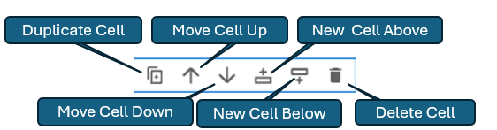
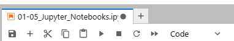
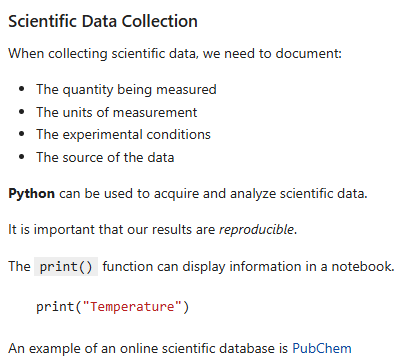
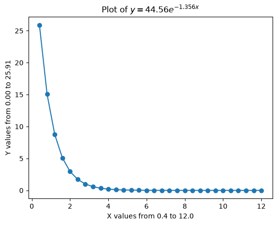
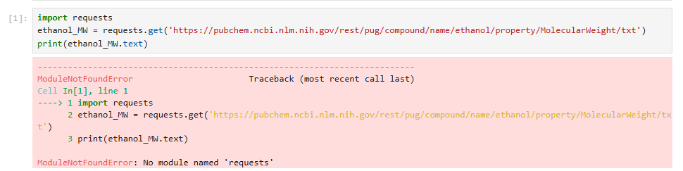
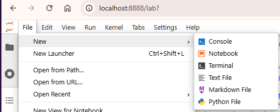
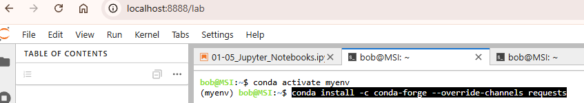
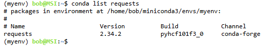
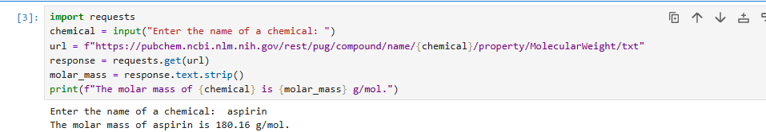
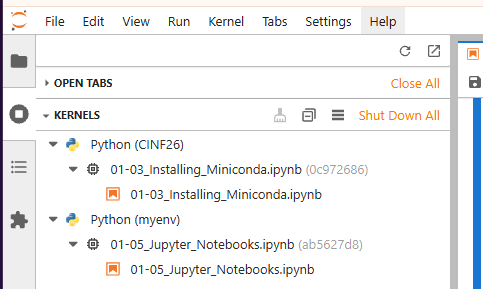

1.5 Jupyter Notebooks#
1.5.1 What Is a Jupyter Notebook?#
We have installed Python, created Conda environments, and learned how to navigate files and directories using JupyterLab. We now have the tools needed to begin programming in Python. But how do we actually write and execute Python code? There are several ways to work with Python, and the tools we choose depend on what we are trying to accomplish. Two common approaches involve writing Python scripts (*.py files) and working with Jupyter notebooks (*.ipynb files).
Python Scripts, IDEs, and Jupyter Notebooks#
A Python script is a text file containing Python instructions, typically saved with the .py extension. We can write scripts using a text editor and execute them using the Python interpreter. However, most programmers use specialized software that makes writing, running, testing, and debugging code easier. These tools are often called Integrated Development Environments (IDEs).
Some popular Python development tools include:
Visual Studio Code (VS Code): A widely used code editor with extensions for Python, Jupyter notebooks, debugging, and other development tools.
PyCharm: An IDE designed specifically for Python development, with tools for managing projects, writing code, and debugging programs.
Thonny: A simpler Python IDE designed primarily for beginners, with tools that help users understand how Python programs execute.
Another approach is to use a Jupyter notebook, which allows us to write and execute Python code interactively, one section at a time. Jupyter notebooks are saved as .ipynb files, rather than .py files. Unlike a conventional Python script, a notebook can combine executable code, formatted text, mathematical equations, graphs, and computational results in a single document. This makes notebooks particularly useful for scientific computing, where we often want to perform a calculation, examine the results, modify our approach, and document what we have learned.
These approaches are not mutually exclusive. For example, VS Code supports both Python scripts and Jupyter notebooks. As you become more comfortable with Python, you may find that different tools are useful for different tasks. In this course, we will begin with Jupyter notebooks using JupyterLab. This will allow us to focus on learning Python and applying it to scientific problems without first having to learn the features of a full programming IDE.
How Is a Jupyter Notebook Organized?#
A Jupyter notebook is organized into sections called cells. The two types of cells we will use most frequently are:
Code cells: Contain Python instructions that can be executed. Results appear below the cell and may include numbers, text, tables, graphs, or error messages.
Markdown cells: Contain formatted text, including headings, explanations, lists, links, and mathematical equations. They allow us to document our work alongside our code.
For example, we might use a Markdown cell to describe a scientific problem, a code cell to perform a calculation, and another Markdown cell to explain what the results mean. We can execute code cells individually, allowing us to develop and test our calculations incrementally rather than running an entire program each time.
JupyterLab, Notebooks, and Kernels#
In Section 1.4.4, Understanding Servers, Environments, and Kernels, we introduced the relationship between JupyterLab, Python environments, and kernels. Recall that:
JupyterLab provides the graphical interface for working with notebooks, files, terminals, and other tools.
A Jupyter notebook is a
.ipynbfile containing code, explanatory text, and saved computational results.A Python kernel is the process that executes code in a notebook using a particular Python environment.
We also created two Conda environments in Section 1.3.6, Creating and Exploring Conda Environments: jlab, which runs JupyterLab, and myenv, which contains the Python packages we will use for scientific computing. Remember that the environment running JupyterLab does not have to be the same environment used to execute notebook code. We can launch JupyterLab from jlab while running Python code through a kernel associated with myenv.
1.5.2 Creating Your First Notebook#
In Section 1.4.6, Working with Files and Directories, we created a personal workspace named my_work to organize our notebooks and scientific data. We will now create our first Jupyter notebook inside that workspace.
Creating a Notebook in JupyterLab#
JupyterLab provides several ways to create notebooks, including the File menu, the Launcher, and the File Browser. We will use the File Browser because it forces us to choose exactly where our notebook will be created.
Start JupyterLab if it is not already running (see Section 1.4.3, Starting and Stopping JupyterLab), and locate the File Browser in the left sidebar.
Navigate to
my_work/notebooks/module1, the directory we created in the lesson1.4.6.1Right-click in an empty area of the File Browser and select New Notebook. (Mac users can use a two-finger click on the trackpad or Control-click.)
JupyterLab will open a new notebook and may ask you to select a kernel. Choose the Python kernel associated with our
myenvConda environment.
Notice that we navigated to our module1 directory **before creating the notebook. This means the notebook is created in that directory, rather than somewhere else in our file system.
Naming Your Notebook#
JupyterLab initially gives a new notebook a default name such as Untitled.ipynb. We should rename it to something more descriptive. Right-click the notebook’s filename in the File Browser and select Rename. Change its name to:
my_first_notebook.ipynb
The .ipynb extension identifies the file as a Jupyter notebook. We should retain this extension when renaming notebooks. Our workspace now contains:
my_work/
├── notebooks/
│ └── module1/
│ └── my_first_notebook.ipynb
└── data/
└── module1/
Notice that the notebook is stored separately from our data directory. As we begin working with scientific data, this organization will help us distinguish between the programs we write and the files those programs use.
Checking Your Kernel#
Look at the upper-right area of your notebook in JupyterLab. You should see the name of the kernel associated with the notebook. Recall from Section 1.4.4, Understanding Servers, Environments, and Kernels that the kernel determines which Python interpreter executes our code. For this activity, we want to use the kernel associated with myenv.
1.5.3 Working with Code Cells#
The objective of this section is not to teach you how to program in Python. We will begin learning Python programming in Module 2. Instead, our objective is to learn how to work with computational notebooks that contain a combination of Markdown cells and code cells. You will be provided with several examples of Python code that you may not yet fully understand. For now, focus on how you create, edit, and execute code cells, how the notebook displays the results, and how different cells interact with one another.
As you work through these activities, you are encouraged to modify the code and observe what happens.
Creating and Executing Code Cells#
When we create a new cell in a Jupyter notebook, it is a code cell by default. Unlike a Markdown cell, which contains text that is rendered for display, a code cell contains instructions that are sent to the notebook’s kernel for execution.
The Cell Toolbar#
In addition to the notebook toolbar at the top of the notebook, individual cells have their own toolbar that provides convenient access to several common operations. These allow us to duplicate, move, insert, and delete cells, as illustrated in the following figure.

Depending on the available space within a cell, the cell toolbar may not always be visible. Many of these operations can also be performed using the notebook toolbar, menus, or keyboard shortcuts.
Activity: Creating and Executing Your First Code Cell#
In this activity, you will create a new code cell, enter a simple Python statement, and execute it.
Select this Markdown cell by clicking on it.
Locate the New Cell Below button in the cell toolbar and click it. Alternatively, you can click the
+button in the notebook toolbar at the top of the notebook.Notice that the new cell is a code cell by default.
Copy the following Python code and paste it into your new code cell.
print(2.0 * 3.0)
With your new code cell selected, press
Shift + Enterto execute the code.
You should see the following output immediately below your code cell:
6.0
Congratulations! You have just created and executed a Python code cell in a Jupyter notebook.
Notice that the notebook now contains both a Markdown cell, which provides instructions and explains what we are doing, and a code cell, which performs a calculation. The result of the calculation is displayed directly below the code cell.
print(2.0 + 5.0)
7.0
Editing and Re-executing a Code Cell#
One of the advantages of working with Jupyter notebooks is that we can modify and re-execute individual code cells without running the entire notebook. Return to the code cell you just created and change the Python code to:
print(2.0 * 5.0)
This time, instead of pressing Shift + Enter, press Ctrl + Enter.
Notice two things:
The output of the code cell changes.
The current cell remains selected.
There are several ways to execute a cell in a Jupyter notebook.
Keyboard Shortcut |
Action |
|---|---|
|
Execute the current cell and advance to the next cell. |
|
Execute the current cell without advancing to the next cell. |
|
Execute the current cell and insert a new cell below it. |
You can also execute a cell using the Run button in the notebook toolbar.
Activity: Experimenting with Code Cells
Return to your code cell and experiment with the following:
Change the numbers and execute the cell using
Ctrl + Enter.Change the multiplication operator (
*) to an addition operator (+) and execute the cell again.Execute the cell using
Shift + Enterand observe which cell is selected.
As you execute the cell, notice that the number in square brackets to the left of the code cell changes. This is called the execution counter, and we will discuss its significance in Section 1.5.5. For now, the important point is that we can modify and execute a code cell as many times as we wish, and everytime we execute the code the execution counter advances.
1.5.4 Working with Markdown Cells#
A scientific notebook should do more than perform calculations and display results. It should also communicate what we are doing, why we are doing it, and what the results mean. Markdown is a lightweight markup language that allows us to create formatted documents using plain text. Unlike a word processor, where we typically select text and apply formatting using menus or toolbar buttons, in Markdown we use special characters to indicate how the text should be formatted. In a Jupyter notebook, Markdown cells allow us to combine explanatory text, mathematical equations, images, hyperlinks, and other content with executable code cells.
In this section, we will learn how to create and work with Markdown cells and introduce some formatting techniques that are particularly useful when documenting scientific work. More extensive reference material on Markdown, Unicode, and LaTeX will be provided in the appendices.
Creating and Editing Markdown Cells#
As we learned in the previous section, when we insert a new cell into a notebook, it is a code cell by default. We can change the cell type using the dropdown menu in the notebook toolbar.

Insert a new (code) cell below this cell.
Use the cell type dropdown menu in the notebook toolbar to change the new cell from
CodetoMarkdown.Click inside the new cell and enter the following text:
My First Markdown Cell
A notebook can contain both *executable code* and **formatted text**.
Press
Ctrl + Enterto render the Markdown cell.
What do you see?
Notice that the Markdown cell is rendered as formatted text, rather than displaying the raw Markdown syntax. The asterisks around "executable code" and "formatted text" indicate that these words should be displayed in italics and bold, respectively.
Notice that *executable code* and **formatted text** were interpreted as instructions for formatting itallics and bold text. Unlike executing a code cell, rendering a Markdown cell does not send Python instructions to the kernel. To modify the contents of a rendered Markdown cell, double-click inside the cell. This allows you to see and edit the original Markdown text. There are two ways to render the cell:
Two Ways to Render a Markdown Cell#
Ctrl + Enterrenders the cell while staying in the cell.Shift + Enterto render the cell and advance to the next cell. If there is no next cell, a new code cell is created below the rendered Markdown cell.
Try changing some of the text and rendering the cell again.
My First Markdown Cell A notebook can contain both executable code and formatted text
Command Mode and Edit Mode#
Jupyter notebooks have two modes of operation, command mode and edit mode.
Command Mode: We work with the cells themselves. We can insert, delete, copy, move, or change the type of a cell.
Edit Mode: We work with the contents of a cell. We can enter and modify Python code or Markdown text.
We can move between these two modes using the keyboard:
Press
Escto enter command mode.Press
Enterto enter edit mode.
When we are in command mode, individual keys can perform operations on cells rather than inserting characters into them.
Key |
Action in Command Mode |
|---|---|
|
Change the selected cell to Markdown |
|
Change the selected cell to code |
|
Insert a new cell above the selected cell |
|
Insert a new cell below the selected cell |
Up Arrow |
Select the cell above |
Down Arrow |
Select the cell below |
|
Copy the selected cell |
|
Paste a copied cell below the selected cell |
Note that you do not need to hold down the Shift key when using these letter shortcuts.
Activity: Creating a Markdown Cell Using Keyboard Shortcuts
Select this cell and perform the following operations:
Press
Escto enter command mode.Press
Bto insert a new cell below this cell.Press
Mto change the new cell to Markdown.Press
Yto change it back to a code cell.Press
Mto change it back to Markdown.Press
Enterto enter edit mode.Type some text into the cell.
Press
Ctrl + Enterto render the cell.
As you change the cell type, observe the cell type dropdown menu in the notebook toolbar.
With a little practice, you can create and change cell types without using your mouse.
Keyboard Shortcuts and Command Mode#
As you become more comfortable working with Jupyter notebooks, you may find that keyboard shortcuts provide a more efficient way of performing many of the operations we have been performing with the mouse. For example, pressing Esc followed by A inserts a new cell above the currently selected cell, while pressing Esc followed by B inserts a new cell below it. Following the convention used in the JupyterLab documentation, we use uppercase letters to identify keyboard keys. You do not need to hold down the Shift key unless it is explicitly indicated in the shortcut (lower case letters work as well).
The following table illustrates some commonly used keyboard shortcuts for working with cells in a Jupyter notebook. Press the keys in sequence, not simultaneously.
Keyboard Shortcut |
Action |
|---|---|
|
Insert a new cell above |
|
Insert a new cell below |
|
Change the selected cell to Markdown |
|
Change the selected cell to code |
|
Copy the selected cell |
|
Paste a copied cell below |
|
Delete the selected cell |
|
Select the cell above |
|
Select the cell below |
What is really going on is that when you press Esc, you are entering the Jupyter notebook’s command mode. Jupyter notebooks have two modes of operation:
Edit Mode: We work with the contents of a cell, entering or modifying Python code or Markdown text. In this mode, a blinking text cursor indicates where text can be entered.
Command Mode: We work with the cells themselves, performing operations such as inserting, deleting, copying, and changing cell types. Notice that when we enter command mode, the text cursor disappears from the cell.
We can move between these two modes by pressing Esc to enter command mode and Enter to return to edit mode.
Activity: Creating a Markdown Cell Using Keyboard Shortcuts
Select this cell and press the following keys in sequence:
Esc— Enter command mode.B— Insert a new cell below.M— Change the new cell to Markdown.Enter— Enter edit mode.
Type some text into your new Markdown cell and press
Ctrl + Enter to render it.
Now try creating a code cell using keyboard shortcuts. Can you do this without using your mouse?
Show Answer
Press Esc, B, Y,
and Enter.
Because a newly inserted cell is a code cell by default,
the Y is not necessary in this example.
Formatting Text with Markdown#
Now that you have been working with Markdown cells in edit mode, you may have noticed that Markdown uses a variety of special characters, such as #, *, and **, to indicate how text should be formatted. These formatting conventions are part of what we call Markdown syntax.
The following table introduces some of the most commonly used Markdown syntax. We will use these formatting techniques throughout the course.
Markdown Syntax |
Purpose |
|---|---|
|
Level 1 heading |
|
Level 2 heading |
|
Level 3 heading |
|
Bold text |
|
Italic text |
|
Inline code |
|
Unordered (bulleted) list item |
|
Ordered (numbered) list item |
|
Hyperlink |
Headings are particularly useful in Jupyter notebooks because they not only organize the contents of a notebook but are also used by JupyterLab to generate its table of contents.
We can also display multiple lines of code within a Markdown cell by placing three backticks before and after the code. This is called a fenced code block. Specifying the programming language after the opening backticks allows the code to be displayed with syntax highlighting, as we have been doing with the Python code examples in this notebook.
Activity: Formatting Scientific Text
In this activity, we will familiarize ourselves with some of the most commonly used Markdown formatting techniques.
Create a new Markdown cell below this cell using keyboard shortcuts.
Copy the following Markdown text into your new cell.
Render the cell and observe how the Markdown syntax is interpreted.
#### Scientific Data Collection
When collecting scientific data, we need to document:
- The quantity being measured
- The units of measurement
- The experimental conditions
- The source of the data
**Python** can be used to acquire and analyze scientific data.
It is important that our results are *reproducible*.
The `print()` function can display information in a notebook.
```python
print("Temperature")
```
An example of an online scientific database is [PubChem](https://pubchem.ncbi.nlm.nih.gov/).
Return to edit mode and experiment with changing the Markdown syntax. Try changing the heading level, converting the bulleted list to a numbered list, and changing which words are displayed in bold or italics.
Render the cell again and observe the results.
Show Answer
Your Markdown cell should initially look like the following. How it changed during the remainder of the activity was up to you.

Notice that the word "Temperature" and its surrounding quotation marks are displayed in red in the Python code example. This is an example of syntax highlighting, where different components of a programming language are displayed in different colors to make the code easier to read. By placing the word python after the opening three backticks of our fenced code block, we are telling the Markdown renderer that the enclosed text is Python code. In this example, "Temperature" is what we call a string, which is a type of data used to represent text.
We will learn about strings, variables, functions, and other components of the Python language in Module 2. For now, notice that we can display Python code with syntax highlighting in a Markdown cell without actually executing it.
Notice that the Python code displayed in your Markdown cell is not executed. It is simply part of the documentation. This allows us to include examples of Python code alongside explanations of how the code works.
You do not need to memorize all the Markdown syntax at this point. As you work with Jupyter notebooks throughout the course, these formatting techniques will become increasingly familiar. More extensive reference material on Markdown will be provided in the appendices.
Using Unicode Characters#
Scientists often use Greek letters, mathematical symbols, subscripts, and superscripts when communicating scientific information. Many of these characters are not found on a standard computer keyboard, but we can incorporate them into our notebooks using Unicode. Unicode is an international standard that assigns a unique numerical identifier, called a code point, to each character it defines. This allows computers to represent and exchange text containing characters from different languages, as well as mathematical and scientific symbols.
Unicode code points are conventionally written using U+ followed by four to six hexadecimal digits (the numbers 0–9 and the letters A–F). For example, the subscript character ₂ has the Unicode code point U+2082. In Python, we can represent this character within a text string using \u2082. This is called a Unicode escape sequence.
Unicode is not part of Markdown syntax. Whereas Markdown uses special characters to indicate how text should be formatted, Unicode defines the characters themselves. For example, the subscript in H₂O is a Unicode character, not an instruction to Markdown to format the number 2 as a subscript.
Because Jupyter notebooks support Unicode, we can copy and paste these characters directly into Markdown cells and into text strings within Python code cells.
Unicode Subscript and Superscript Characters
The following table provides the Unicode characters for the numeric subscripts and superscripts along with their corresponding Python escape sequences.
0 |
1 |
2 |
3 |
4 |
5 |
6 |
7 |
8 |
9 |
|
|---|---|---|---|---|---|---|---|---|---|---|
Subscript |
₀ |
₁ |
₂ |
₃ |
₄ |
₅ |
₆ |
₇ |
₈ |
₉ |
Python |
|
|
|
|
|
|
|
|
|
|
Superscript |
⁰ |
¹ |
² |
³ |
⁴ |
⁵ |
⁶ |
⁷ |
⁸ |
⁹ |
Python |
|
|
|
|
|
|
|
|
|
|
When working in a Markdown cell, simply copy and paste the character itself, not its Python escape sequence. When working with text strings in Python, we can use either representation. For example, the following two Python statements produce the same output.
print("H₂O")
print("H\u2082O")
H₂O
H₂O
Other Unicode Characters and Their Scientific Applications
The following table illustrates some additional Unicode characters and examples of their use in scientific communication.
Type |
Examples |
|---|---|
Greek letters |
α β γ Δ λ μ π Ω |
Mathematical symbols |
± × ÷ ≠ ≈ ≤ ≥ ∞ |
Arrows |
← ↑ → ↓ ⇌ ↔ ⇒ |
Scientific units |
°C μm Å m/s² |
Chemical formulas and ions |
H₂O CO₂ NH₄⁺ SO₄²⁻ |
You do not need to memorize the Unicode code points associated with these characters. There are numerous online resources for finding Unicode characters, and a Unicode reference will be provided in the appendix. We can also use an artificial intelligence (AI) assistant, such as ChatGPT, to quickly generate text containing Unicode characters. For example, we could ask an AI assistant to write a chemical formula using Unicode subscripts and superscripts, and then copy and paste the result into our notebook. As we progress through this course and begin using AI as a coding assistant, we will discover that it is often more important to understand what we want to accomplish and what technologies are available to accomplish it than to memorize the details of their implementation.
Activity: Using Unicode Characters
In this activity, we will explore how Unicode characters can be used in both Markdown and code cells.
Create a new Markdown cell below this cell using keyboard shortcuts.
Copy the following text into your new cell and render it.
The temperature was 25 °C.
The CO₂ concentration was 420 ± 5 ppm.
The wavelength (λ) was 550 nm.
The acceleration due to gravity was 9.81 m/s².
Use an AI assistant, such as ChatGPT, to generate additional examples of text containing Unicode characters. You might try some of the following prompts:
Write the chemical formula for the sulfate ion using Unicode subscripts and superscripts.
Express the units of density as grams per cubic centimeter using Unicode characters.
Write a sentence describing an electrical resistance of 100 ohms using the Greek letter omega.
Give me five Unicode symbols commonly used in my scientific discipline.
Copy some of the AI-generated text into your Markdown cell and render it. Check that the characters correctly represent the scientific information you requested.
Now create a code cell below your Markdown cell and execute the following Python code.
print("The temperature was 25 °C.")
print("The CO₂ concentration was 420 ± 5 ppm.")
print("The acceleration due to gravity was 9.81 m/s².")
Modify the Python code to display some of the Unicode characters you obtained from the AI assistant.
What do you observe?
Notice that the same Unicode characters can be displayed in both a rendered Markdown cell and the output of a Python code cell.
Some possible responses to the AI prompts are:
Sulfate ion: SO₄²⁻
Units of density: g/cm³
Electrical resistance: The resistance was 100 Ω.
Unlike Markdown formatting instructions, Unicode characters do not need to be interpreted by a Markdown renderer to be displayed. They are characters that can be incorporated directly into text, including the strings we pass to Python’s print() function.
Unicode characters are particularly useful when we want to include scientific symbols in explanatory text, program output, graph labels, and data files. We will encounter many of these applications as we progress through the course. Although Unicode provides many useful scientific characters, it has limitations when it comes to representing more complex mathematical expressions. In the next section, we will introduce LaTeX, which allows us to display mathematical equations within our Markdown cells.
print("The temperature was 25 °C.")
print("The CO₂ concentration was 420 ± 5 ppm.")
print("The acceleration due to gravity was 9.81 m/s².")
The temperature was 25 °C.
The CO₂ concentration was 420 ± 5 ppm.
The acceleration due to gravity was 9.81 m/s².
Displaying Mathematical Equations with LaTeX#
In the previous section, we learned how to use Unicode characters to incorporate scientific symbols, subscripts, and superscripts into our notebooks. Although Unicode is very useful for scientific communication, it has limitations when it comes to representing more complex mathematical expressions, such as fractions, integrals, and equations containing multiple levels of subscripts and superscripts. LaTeX is a document preparation and typesetting system widely used by scientists, mathematicians, and engineers. Jupyter notebooks use a mathematical rendering system called MathJax that allows us to use LaTeX mathematical notation within Markdown cells.
There are two common ways to display mathematical expressions within a Markdown cell:
Inline mathematics: Place the mathematical expression between single dollar signs (
$). The expression is displayed within the surrounding text.Display mathematics: Place the mathematical expression between double dollar signs (
$$). The expression is displayed on a separate line.
For example, if we enter the following Markdown text:
Einstein's equation $E=mc^2$ relates mass and energy.
It is rendered as:
Einstein’s equation \(E=mc^2\) relates mass and energy.
If instead we enter:
Einstein's equation relates mass and energy:
$$
E=mc^2
$$
It is rendered as:
Einstein’s equation relates mass and energy:
LaTeX uses special characters and commands to describe mathematical expressions. The following table illustrates some commonly used LaTeX mathematical notation.
LaTeX Syntax |
Rendered Expression |
Description |
|---|---|---|
|
\(x^2\) |
Superscript |
|
\(x_1\) |
Subscript |
|
\(e^{-kt}\) |
Grouped superscript |
|
\(\frac{a}{b}\) |
Fraction |
|
\(\sqrt{x}\) |
Square root |
|
\(\lambda\) |
Lowercase Greek letter lambda |
|
\(\Delta\) |
Uppercase Greek letter delta |
|
\(\times\) |
Multiplication symbol |
|
\(\sum_{i=1}^{n} x_i\) |
Summation |
|
\(\int_a^b f(x)\,dx\) |
Definite integral |
Notice that curly braces {} are used to group characters and expressions. For example, e^{-kt} indicates that the entire expression -kt is in the exponent. As with Unicode, you are not expected to memorize these commands. A more extensive LaTeX reference will be provided in the appendix. We can also use an AI assistant, such as ChatGPT, to generate LaTeX notation for mathematical expressions that we wish to incorporate into our notebooks.
Activity: Displaying Mathematical Equations with LaTeX
In this activity, we will explore how LaTeX can be used to document mathematical expressions in a scientific notebook.
Create a new Markdown cell below this cell using keyboard shortcuts.
Copy the following Markdown text into your new cell and render it.
#### Exponential Decay
The quantity remaining at time $t$ is described by the exponential decay equation:
$$
N(t) = N_0 e^{-kt}
$$
where:
- $N_0$ is the initial quantity.
- $N(t)$ is the quantity remaining at time $t$.
- $k$ is the decay constant.
- $t$ is the elapsed time.
Return to edit mode and experiment with changing the mathematical expressions. Try removing the curly braces around
-ktin the exponential term. Render the cell and observe what happens.Restore the original equation.
Use an AI assistant, such as ChatGPT, to generate LaTeX notation for additional scientific equations. You might try some of the following prompts:
Generate the LaTeX notation for the ideal gas law that I can paste into a Jupyter Markdown cell.
Write the equation relating the wavelength, frequency, and speed of light using LaTeX display mathematics.
Generate LaTeX notation for the quadratic formula that I can use in a Jupyter notebook.
Generate LaTeX notation for an equation commonly used in my scientific discipline, and define each of its variables.
Copy the AI-generated Markdown and LaTeX notation into your Markdown cell and render it. Check that the equations correctly represent the mathematical relationships you requested.
Show Answer
Your original Markdown cell should look like the following:
INSERT SCREENSHOT HERE
When you removed the curly braces around the exponent, you changed how LaTeX interpreted the expression.
With curly braces:
Without curly braces:
Notice that without the curly braces, only the minus sign is included in the superscript. This illustrates the importance of grouping characters when using LaTeX notation.
Some possible results from the AI prompts are:
Ideal gas law:
Relationship between wavelength and frequency:
Quadratic formula:
Although an AI assistant can quickly generate the LaTeX notation needed to display these equations, it is our responsibility to ensure that the mathematical expressions are correct.
Unicode and LaTeX are complementary technologies that allow us to communicate scientific information within our notebooks. Unicode is particularly useful for incorporating scientific characters directly into text, while LaTeX is particularly useful for representing structured mathematical expressions. As we progress through this course, we will use Markdown, Unicode, and LaTeX to document the scientific concepts and mathematical relationships underlying the computations we perform in our Python code cells.
1.5.5 Understanding Notebook Execution#
In the previous sections, we learned how to create, edit, and execute code cells and how to use Markdown cells to document our work. We will now explore what happens when we execute code in a Jupyter notebook and how the different code cells in a notebook can interact with one another. In our introductory notebook on Understanding Your Computer, we discussed the distinction between memory and persistent storage and the distinction between programs and processes. These concepts are particularly important when working with computational notebooks.
When we execute a code cell, the instructions contained in that cell are sent to the notebook’s kernel. In the case of a Python kernel, a Python interpreter executes those instructions and returns any resulting output to the notebook. Variables and other objects created during execution are held in the kernel’s working memory (RAM), where they can be accessed by subsequently executed code cells. We will refer to the collection of variables, objects, and other information maintained by the running kernel as its computational state. Unlike a conventional Python script that is normally executed from beginning to end, a Jupyter notebook allows us to execute individual code cells in any order and to execute the same cell multiple times. Consequently, the computational state of a notebook depends on which cells have been executed and the order in which they were executed, not simply on their arrangement within the notebook.
In the following activities, we will explore these concepts using some Python code that you may not yet fully understand. Remember that our objective at this point is to learn how to work with computational notebooks. We will begin learning how to write Python code in Module 2.
Interacting with a Running Code Cell#
So far, the code cells we have executed have completed their calculations almost immediately. However, some programs require additional information from the user while they are running, and others may take considerable time to complete their calculations.
Activity: Interacting with a Running Code Cell
Create a new code cell below this cell.
Copy the following Python code into your new cell.
name = input("Enter your name: ")
print("Hello,", name)
Execute the cell using
Shift + Enter, but do not immediately enter your name.Observe what is displayed below the code cell and what appears in the square brackets to the left of the cell.
Enter your name and press
Enter.Observe how the output and the execution indicator change.
What do you observe?
When the program requests your name, it pauses and waits for you to provide the requested information. While the cell is executing, an asterisk appears between the square brackets to the left of the cell.
[*]
This indicates that the cell is being executed. Once you enter your name, the program completes its execution, displays a greeting, and the asterisk is replaced by a number. This number is called the execution counter, which indicates the order in which code cells have been executed since the kernel was started.
When a kernel is executing code, we say that it is busy. When it is not executing code, we say that it is idle. A kernel that is waiting for user input is still busy, even though it may not appear to be doing anything. In this example, the program was waiting for us to provide information before it could complete its execution.
name = input("Enter your name: ")
print("Hello,", name)
Hello, Bob
Can you explain why the cell did not move onto the next cell when you hit shift enter, and can you figure out the keyboard shortcut to do so?
Explanation
When Python encounters an input() statement, the execution of the Python code pauses while the kernel process waits for information from the user. During this time, the kernel remains busy, and the computational state is retained in memory. JupyterLab directs keyboard input to the running program rather than to the notebook's cell controls. When you press Enter to submit the requested information, Python resumes execution and completes the remaining instructions in the cell, but JupyterLab may not automatically advance to the next cell as you would normally expect when using Shift + Enter. Once execution is complete, you can press Esc to return to command mode and then ↓ (Down Arrow) to select the next cell without executing it.
1.5.5.2 Working with Multiple Code Cells#
One of the features that distinguishes computational notebooks from traditional Python scripts is that we can divide our code into individual cells and execute those cells independently of one another.
Although the Python code is contained in separate cells, it is executed by the same kernel. The information stored in memory when we execute one code cell becomes part of the kernel’s computational state and can be accessed by subsequently executed code cells.
As an example, let us perform a calculation using the exponential decay equation we encountered when learning about LaTeX.
where:
\(N_0\) is the initial quantity.
\(N(t)\) is the quantity remaining at time \(t\).
\(k\) is the decay constant.
\(t\) is the elapsed time.
In this example, we will use an initial quantity of 100 and a decay constant of 0.05 h⁻¹. We will allow the user to specify the elapsed time in hours.
Activity: Performing a Calculation Using Multiple Code Cells
Create three code cells below this Markdown cell and copy each of the following blocks of Python code into a separate code cell.
Code Cell 1: Import the Python math module.
import math
Code Cell 2: Define the initial quantity and decay constant, and request the elapsed time from the user.
N0 = 100
k = 0.05
t = float(input("Enter the elapsed time in hours: "))
Code Cell 3: Calculate and display the quantity remaining.
N = N0 * math.exp(-k * t)
print(f"The quantity remaining is {N:.2f}")
Execute the three code cells in the order in which they appear.
When prompted, enter an elapsed time of 10 hours.
Observe the output and execution counter of each code cell.
Identify which code cells produce visible output and which do not.
Show Answer
- The first code cell does not produce any visible output. It imports the Python math module, making additional mathematical functions available to subsequently executed code cells.
- The second code cell requests the elapsed time from the user and stores the values of the initial quantity, decay constant, and elapsed time in memory.
- The third code cell uses information from both of the preceding cells to perform a calculation, stores the result in memory, and displays the following output:
The quantity remaining is 60.65
Notice that not all code cells produce visible output. A code cell may perform operations that change the kernel’s computational state without displaying anything in the notebook. The absence of visible output does not mean that nothing happened when the cell was executed. We will learn more about importing modules, defining variables, and performing mathematical calculations in Module 2. For now, the important point is that code cells within a notebook share the computational state maintained by the kernel.
Keep these three code cells in your notebook, as we will continue working with them in the next section.
import math
N0 = 100
k = 0.05
t = float(input("Enter the elapsed time in hours: "))
N = N0 * math.exp(-k * t)
print(f"The quantity remaining is {N:.2f}")
The quantity remaining is 60.65
1.5.5.3 Understanding Execution Order and Kernel Memory#
In the previous activity, we executed three code cells in the order in which they appeared in the notebook. However, because the kernel maintains its computational state in memory, we do not necessarily need to execute code cells in the order in which they appear, nor do we need to execute every code cell each time we perform a calculation.
It is important to distinguish between the information currently stored in the kernel’s memory and the output currently displayed in the notebook. Changing the value of a variable in memory does not automatically update the output of a previously executed code cell.
Activity: Execution Order and Computational State
Return to the three code cells from the previous activity.
Execute Code Cell 2 again, but this time enter an elapsed time of 20 hours.
Observe the output currently displayed below Code Cell 3 before executing it.
Execute Code Cell 3.
Observe the new result and the execution counters associated with the three code cells.
Show Answer
When we execute Code Cell 2, the value of the elapsed time stored in the kernel's memory changes from 10 to 20 hours. However, the output displayed below Code Cell 3 does not change until we execute that cell again.
After executing Code Cell 3, we obtain:
The quantity remaining is 36.79
Notice that the execution counters reflect the most recent execution of each cell, not its position within the notebook. We did not need to execute Code Cell 1 again because the math module was already available to the running Python process.
Restarting the Kernel#
Restarting the kernel terminates the existing kernel process and starts a new one. In doing so, we lose the computational state maintained in memory by the previous kernel. However, restarting the kernel does not delete the code or Markdown cells in our notebook.
Let us investigate what happens when we restart the kernel and attempt to perform our calculation again.
Activity: Restarting the Kernel
From the JupyterLab menu, select Kernel → Restart Kernel and confirm that you want to restart the kernel.
Execute Code Cell 3 without executing either of the preceding code cells.
Observe the error message.
Execute Code Cell 2, entering an elapsed time of 20 hours.
Execute Code Cell 3 again and observe the new error message.
Execute Code Cell 1 and then Code Cell 3.
Observe the result and the execution counters.
Show Answer
When we first execute Code Cell 3 after restarting the kernel, Python generates the following error:
NameError: name 'N0' is not defined
When we restarted the kernel, we lost the computational state of the previous Python process, including the variables we had defined.
After executing Code Cell 2, the variables needed for the calculation are once again defined. However, when we execute Code Cell 3, Python generates a different error:
NameError: name 'math' is not defined
Although the math module is part of our Python installation, we have not yet imported it into our new Python session.
Once we execute Code Cell 1 and then Code Cell 3, our calculation is successful:
The quantity remaining is 36.79
Notice that we were able to perform the calculation even though we executed Code Cell 2 before Code Cell 1.
The Python math module is part of the Python standard library, a collection of modules distributed with Python. Although these modules are available in our Python environment, many must be explicitly imported before we can use them. Restarting the kernel does not remove these modules from our Python environment, but we must import them again if we want to use them in our new Python session.
Interrupting a Running Kernel#
There may be times when we want to stop the execution of a code cell without losing the computational state maintained by the kernel. For example, a calculation may be taking longer than expected, or a program may be waiting for input that we do not wish to provide.
In JupyterLab, we can select Kernel → Interrupt Kernel to attempt to stop the current execution without restarting the kernel. Unlike restarting the kernel, interrupting the kernel does not normally clear its computational state. However, any changes made to the computational state before the interruption may remain in memory.
As we continue working with computational notebooks, it is important to remember that the order in which we execute code cells determines the computational state of our kernel, and that this state may not be consistent with the code or output currently displayed in our notebook.
1.5.6 Working with Python Packages#
In the previous section, we used the Python math module to perform an exponential decay calculation. The math module is part of the Python standard library and is available in a standard Python installation. However, much of the power of Python for scientific computing comes from the numerous third-party packages that have been developed to extend its capabilities.
Recall that when we created our myenv Conda environment in Section 1.3, we installed two scientific Python packages:
NumPy: A package for numerical computing and working with arrays of numerical data.
Matplotlib: A package for creating graphs and other visual representations of data.
We will now use these packages to generate numerical data and create a graph.
1.5.6.1 Using Previously Installed Packages#
Before proceeding, verify that your notebook is using the myenv kernel by looking at the kernel indicator in the upper-right corner of your notebook. If necessary, change the kernel to myenv.
Remember that although we are running JupyterLab from our jlab environment, the Python code in our notebook is being executed using the Python interpreter and packages installed in our myenv environment.
In the following activity, we will generate and plot data for an exponential decay function similar to the one we used in the previous section.
Activity: Generating and Plotting Scientific Data
Verify that your notebook is using the
myenvkernel.Create a new code cell below this Markdown cell.
Copy the following Python code into your new cell.
import matplotlib.pyplot as plt
import numpy as np
# Define the parameters for the exponential decay function
A = 44.56
m = 1.356
# Display the values of the parameters
print(f"Pre-exponential factor A: {A}")
print(f"Decay parameter m: {m}")
# Generate and plot the exponential curve
x_values = [round(i * 0.4, 10) for i in range(1, 31)]
y_values = [A * np.exp(-m * x) for x in x_values]
exp_array = np.column_stack((x_values, y_values))
plt.plot(exp_array[:, 0], exp_array[:, 1], marker='o')
plt.title(fr'Plot of $y={A:.2f}e^{{-{m:.3f}x}}$')
plt.xlabel(f'X values from {x_values[0]} to {x_values[-1]}')
plt.ylabel(f'Y values from {min(y_values):.2f} to {max(y_values):.2f}')
plt.show()
exp_array
Execute the code cell and observe its output.
Change the value of
Aand execute the cell again.Change the value of
mand execute the cell again.
What do you observe?
The code cell produces several types of output, including text, a graph, and an array of numerical data.
Changing the values of A and m changes both the numerical data and the graph generated from those data. Notice that the title of the graph also changes to reflect the new values.
NumPy is used to perform numerical operations and organize the resulting data into an array, while Matplotlib is used to create a graphical representation of those data.
At this point, you are not expected to understand all of the Python instructions used in this activity. We will learn how to generate, manipulate, analyze, and visualize numerical data in Module 2.
The important point here is that we were able to use NumPy and Matplotlib because they were already installed in the Python environment associated with our notebook’s kernel. As with the math module in the previous section, we needed to import them before we could use them in our Python code.
What happens if we want to use a Python package that is not already installed in our environment?
import matplotlib.pyplot as plt
import numpy as np
# Define the parameters for the exponential decay function
A = 44.56
m = 1.356
# Display the values of the parameters
print(f"Pre-exponential factor A: {A}")
print(f"Decay parameter m: {m}")
# Generate and plot the exponential curve
x_values = [round(i * 0.4, 10) for i in range(1, 31)]
y_values = [A * np.exp(-m * x) for x in x_values]
exp_array = np.column_stack((x_values, y_values))
plt.plot(exp_array[:, 0], exp_array[:, 1], marker='o')
plt.title(fr'Plot of $y={A:.2f}e^{{-{m:.3f}x}}$')
plt.xlabel(f'X values from {x_values[0]} to {x_values[-1]}')
plt.ylabel(f'Y values from {min(y_values):.2f} to {max(y_values):.2f}')
plt.show()
exp_array
Pre-exponential factor A: 44.56
Decay parameter m: 1.356

array([[4.00000000e-01, 2.59050154e+01],
[8.00000000e-01, 1.50599153e+01],
[1.20000000e+00, 8.75510182e+00],
[1.60000000e+00, 5.08979012e+00],
[2.00000000e+00, 2.95895627e+00],
[2.40000000e+00, 1.72019318e+00],
[2.80000000e+00, 1.00003660e+00],
[3.20000000e+00, 5.81372609e-01],
[3.60000000e+00, 3.37981741e-01],
[4.00000000e+00, 1.96486136e-01],
[4.40000000e+00, 1.14227477e-01],
[4.80000000e+00, 6.64062962e-02],
[5.20000000e+00, 3.86053889e-02],
[5.60000000e+00, 2.24432943e-02],
[6.00000000e+00, 1.30474391e-02],
[6.40000000e+00, 7.58514610e-03],
[6.80000000e+00, 4.40963480e-03],
[7.20000000e+00, 2.56354707e-03],
[7.60000000e+00, 1.49032151e-03],
[8.00000000e+00, 8.66400397e-04],
[8.40000000e+00, 5.03683026e-04],
[8.80000000e+00, 2.92816799e-04],
[9.20000000e+00, 1.70229436e-04],
[9.60000000e+00, 9.89631099e-05],
[1.00000000e+01, 5.75323359e-05],
[1.04000000e+01, 3.34465002e-05],
[1.08000000e+01, 1.94441675e-05],
[1.12000000e+01, 1.13038927e-05],
[1.16000000e+01, 6.57153310e-06],
[1.20000000e+01, 3.82036953e-06]])
1.5.6.2 Installing Additional Packages#
There are thousands of Python packages available that extend the capabilities of Python beyond those provided by the standard library. In 1.3.6 Creating and Exploring Conda Environments we created myenv that had NumPy and Matplotlib indtalled, and so were able to important them into the previous code cell. The following script asks for you to input the name of a chemical, it then goes to PubChem and returns the molar mass of the chemical.
import requests
chemical = input("Enter the name of a chemical: ")
url = f"https://pubchem.ncbi.nlm.nih.gov/rest/pug/compound/name/{chemical}/property/MolecularWeight/txt"
response = requests.get(url)
molar_mass = response.text.strip()
print(f"The molar mass of {chemical} is {molar_mass} g/mol.")
If you run it and have not installed the requests package in your environment you will get the error shown in the following image.

In [sectioin 1.3.6 Creating and Exploring Conda Environments](https://rebelford.github.io/py4sci2027/content/modules/module1-setup/01-03_Installing_Miniconda.html#creating-and-exploring-conda-environments you opened the terminal and installed the packages and we need to do that for the requests package, but instead of opening the terminal in our OS we will open it from within Jupyter Lab. We can do this by clicking File/new/terminal as in the image below

Now, you need to remember that we are using Conda and not pip, and my advice is to open an AI and give it a prompt like
Please give me the conda command for installing the requests package, preferably using Conda-Forge
Note, when you open the terminal it does not activate an environment and the first thing I did in the image below was activate myenv, and then I pasted the following code in and installed requests

You can now confirm the installationconda list requests

And you should now be able to run your script of determining the molar mass of a compound.

import requests
chemical = input("Enter the name of a chemical: ")
url = f"https://pubchem.ncbi.nlm.nih.gov/rest/pug/compound/name/{chemical}/property/MolecularWeight/txt"
response = requests.get(url)
molar_mass = response.text.strip()
print(f"The molar mass of {chemical} is {molar_mass} g/mol.")
The molar mass of aspirin is 180.16 g/mol.
1.5.7 Saving and Managing Notebooks#
A computational notebook serves both as a document that records our work and as an interface to a running computational process. As we have seen, the computational state maintained by the kernel and the information displayed in our notebook are not necessarily the same. We will now explore what happens when we save and close a notebook, shut down its kernel, and reopen the notebook at a later time.
1.5.7.1 Saving Notebooks and Their Output#
When we save a Jupyter notebook, we save its code cells, Markdown cells, cell outputs, and associated metadata in an .ipynb file in persistent storage. This includes textual output, numerical results, and graphs. However, saving a notebook does not save the computational state maintained in the kernel’s memory.
JupyterLab periodically saves our notebooks through a feature called autosave. We can also manually save a notebook using Ctrl + S (Cmd + S on macOS) or by selecting the Save Notebook icon in the notebook’s toolbar.
Activity: Saving Your Notebook
Locate the code cell in the previous section that generated an exponential decay graph.
Execute the cell if its output is not currently displayed.
Save your notebook.
Close the notebook by clicking the X on its tab.
Reopen the notebook using the JupyterLab File Browser.
Locate the graph. Is it necessary to execute the code cell again to view the graph?
Show Answer
The graph is saved as part of the notebook file and can be viewed without executing the code that generated it. The same is true of the other saved cell outputs.
1.5.7.2 Closing Notebooks and Shutting Down Kernels#
Closing a notebook does not necessarily shut down its kernel. The kernel is a separate process that may continue running and maintaining its computational state in memory even when the notebook is no longer open.
JupyterLab provides a Running Terminals and Kernels panel in the left sidebar that allows us to view and manage these running processes.

Activity: Shutting Down a Kernel
Save and close your notebook again.
Open the Running Terminals and Kernels panel in the left sidebar.
Locate the kernel associated with your notebook and shut it down.
Reopen your notebook using the File Browser. Select the
myenvkernel if prompted.Observe whether the previously saved outputs are still displayed.
Create a new code cell and execute the following instruction without first executing any of the previous code cells.
print(A)
Explain why you can still see the graph that was generated using the variable
A, even though Python may no longer recognize that variable.
Show Answer
When we shut down the kernel, we terminated the Python process and lost its computational state. The variable A is no longer defined in our new Python session.
However, the graph was saved as part of the notebook file in persistent storage. We can therefore view the graph even though the computational state used to generate it no longer exists.
When you have finished working with a notebook, it is good practice to save the notebook and shut down its kernel. This releases computing resources that are no longer needed.
1.5.7.3 Reproducibility and Notebook Execution#
Reproducibility is an important aspect of scientific computing. When we share a computational notebook with another scientist, we generally want that person to be able to execute the notebook and reproduce our results.
As we discovered in Section 1.5.5, the computational state of a notebook depends on the order in which its code cells have been executed. It is therefore possible to create a notebook that displays results that cannot be reproduced by executing its code cells in the order in which they appear.
Activity: Testing Notebook Execution
Delete the code cell containing
print(A)that we created in the previous activity.Review the code cells we created throughout this notebook.
From the Kernel menu, select Restart Kernel and Run All Cells.
Provide the requested information whenever a code cell prompts you for input.
Observe whether the notebook successfully executes from beginning to end.
Identify any errors and try to explain why they occurred.
Save your notebook.
Restarting the kernel and executing all cells in sequence is a useful first step in testing the reproducibility of a computational notebook. However, reproducibility may also depend on access to external data, installed Python packages, software versions, and other aspects of our computing environment. We will explore these issues further as we progress through this course.
As a general practice, before sharing or submitting a completed computational notebook, restart its kernel, execute its cells in sequence, verify its results, and save the notebook.
1.5.8 Working with Files from a Notebook#
In Section 1.4.6, we learned how to create and manage files and directories using both the Unix terminal and the JupyterLab File Browser. We will now explore how we can interact with the file system directly from a computational notebook.
One of the fundamental tasks in scientific computing is moving information between working memory and persistent storage. We may want to read experimental data from a file into our computer’s memory, perform calculations on those data, and then save the results to another file. Python provides numerous ways to perform these operations.
1.5.8.1 Understanding the Notebook’s Working Directory#
Recall that when we work in a Unix terminal, we can use the pwd command to determine our present working directory. A running Python process also has a current working directory, which serves as the starting point for interpreting relative file paths.
By default, when we open a notebook and start its kernel in JupyterLab, its working directory is normally the directory containing the notebook. This is not necessarily the directory from which we launched the JupyterLab server.
Python provides a module called os, which is part of the Python standard library and allows us to interact with the operating system.
Activity: Identifying Your Working Directory
Create a new code cell below this Markdown cell.
Copy and execute the following Python code.
import os
print(os.getcwd())
Examine the path displayed in the output.
Compare this path with the location of your notebook in the JupyterLab File Browser.
Show Answer
The os.getcwd() function returns the current working directory of the running Python process. If you created your notebook in the directory we established in Section 1.4.6, your path should end with:
my_work/notebooks/module1
The complete path will depend on your operating system and username.
The Python os.getcwd() function performs a similar task to the Unix pwd command, although one is a Python function and the other is a shell command. Both allow us to determine the current working directory of the process from which they are executed.
1.5.8.2 Accessing Files Using Relative Paths#
Recall from our earlier discussions of files and directories that there are two ways to specify the location of a file:
An absolute path specifies the location of a file starting from the root of the file system.
A relative path specifies the location of a file relative to the current working directory.
When we created our personal workspace in Section 1.4.6, we established separate directories for our notebooks and data.
my_work/
├── notebooks/
│ └── module1/
└── data/
└── module1/
Our current notebook is located in notebooks/module1, but we want to store our data in data/module1.
Recall that .. represents the parent directory. We can therefore navigate from our notebook’s working directory to our data directory using the relative path:
../../data/module1
The first .. takes us from module1 to notebooks, and the second .. takes us from notebooks to my_work. From there, we can navigate to data/module1.
Activity: Accessing Directories from a Notebook
Create a new code cell and execute the following Python code.
print(os.listdir("."))
print(os.listdir(".."))
print(os.listdir("../.."))
print(os.listdir("../../data/module1"))
Compare the output of each instruction with the directory structure displayed in your JupyterLab File Browser.
Show Answer
The os.listdir() function returns a list of the files and directories located at the specified path.
.refers to the current working directory...refers to its parent directory.../..takes us up two levels in the directory structure.../../data/module1refers to our Module 1 data directory.
If your data directory does not yet contain any files, the last instruction will return an empty list, represented by square brackets: [].
Notice that these instructions allow us to access the contents of other directories without changing our current working directory.
An advantage of using relative paths is that they do not depend on a particular username or the absolute location of our workspace. If we move our entire workspace to another computer and preserve its directory structure, the same relative paths can still be used.
1.5.8.3 Creating Data Files#
In Section 1.5.6, we used NumPy to generate an array of numerical data and Matplotlib to create a graphical representation of those data. The numerical data were stored in a variable called exp_array in the kernel’s memory.
Although we can save the notebook and its displayed output, we may also want to save our numerical data in a separate file so that they can be accessed by other notebooks, programs, or scientists.
One commonly used file format for exchanging tabular data is the CSV (Comma-Separated Values) format. A CSV file is a plain-text file in which each line represents a row of data and commas separate the values within each row. CSV files can be opened by many different types of software, including spreadsheet programs, text editors, and scientific computing applications.
NumPy provides functions that allow us to save numerical arrays to text files and read numerical data from those files.
Activity: Saving Numerical Data to a File
Return to the code cell in Section 1.5.6 where we generated the exponential decay graph and execute it again. This ensures that NumPy has been imported and that
exp_arrayexists in the kernel’s memory.Return to this section and create a new code cell.
Copy and execute the following Python code.
np.savetxt("../../data/module1/exponential_decay.csv",
exp_array,
delimiter=",",
header="x,y",
comments="",
fmt="%.6f")
Use the JupyterLab File Browser to navigate to your
data/module1directory.Locate and open the file
exponential_decay.csv.Examine its contents and compare them with the numerical data displayed in your notebook.
Show Answer
The NumPy savetxt() function takes the numerical data stored in memory and writes them to a text file in persistent storage.
The file contains two columns of numerical data separated by commas, with the column headings x and y on the first line.
We have now created a data file that exists independently of our notebook and its running kernel.
Once we have saved our data to a file, we can read those data back into Python, even after the original kernel has been shut down.
Activity: Reading Numerical Data from a File
Restart your notebook’s kernel.
Create a new code cell and execute the following Python code.
import numpy as np
saved_data = np.loadtxt(
"../../data/module1/exponential_decay.csv",
delimiter=",",
skiprows=1
)
print(saved_data)
Compare the numerical data displayed in the notebook with the contents of your CSV file.
Create another code cell and execute the following code.
import matplotlib.pyplot as plt
plt.plot(saved_data[:, 0], saved_data[:, 1], marker="o")
plt.xlabel("x")
plt.ylabel("y")
plt.title("Exponential Decay Data from CSV File")
plt.show()
Compare this graph with the graph we generated in Section 1.5.6.
Show Answer
Although restarting the kernel removed our original numerical array from memory, the data we saved to the CSV file remained in persistent storage.
The NumPy loadtxt() function reads the numerical data from the file and creates a new array in memory. We can then use Matplotlib to generate a graph from those data without repeating the original exponential decay calculations.
We have now used Python to move numerical data between working memory and persistent storage. We have also used relative paths to access files outside the directory containing our notebook.
As we progress through this course, we will use these same concepts to acquire, store, analyze, and visualize real scientific data, including data obtained from experimental measurements, environmental sensors, and online scientific resources.